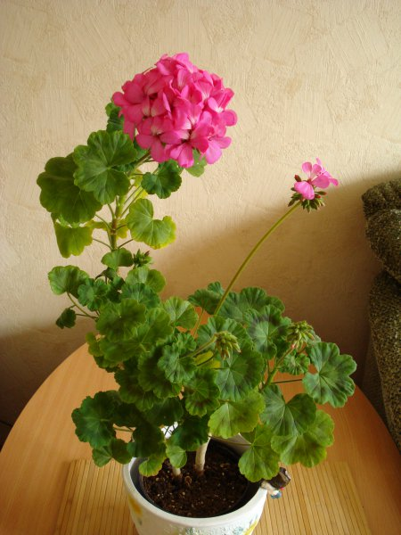
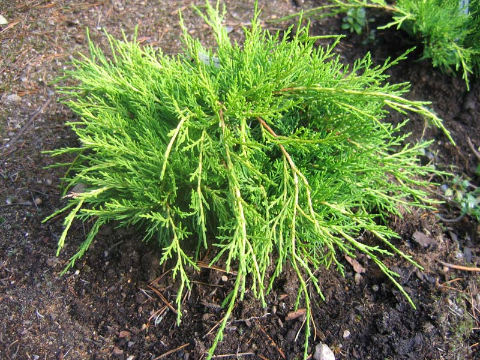
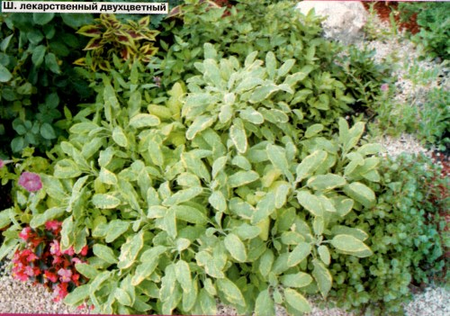
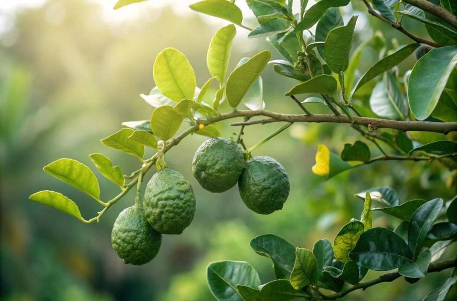

Повышает умственную и физическую активность, восстанавливает психоэмоциональную гармонию при переутомлении и нервном истощении, устраняет чувство страха. Является прекрасным антидепрессантом, улучшает настроение, устраняет чувство страха, активизирует умственный и физический потенциал у пожилых людей. Устраняет комплекс неполноценности и зависимость от чужого мнения, объективизирует самооценку. Наполняет воздух прекрасным свежим ароматом, обостряет восприятие, придает бодрости и сил. Располагает к нежности. Помогает восполнить энергетические потери тем, кто пострадал от любовного соперничества.
В древности её считали целебным средством, способным срастить переломы и излечить рак.

Аромат против лени, апатии и скуки. Освежает, повышает собранность, творческие и деловые качества личности. Устраняет стрессовые реакции и разрушительные эмоции: раздражительность, агрессию. Тонизирует, укрепляет нервы, повышает жизненную активность, избавляет от чувства страха, устраняет апатию, умственное утомление, проясняет мироощущение.
Можжевельник помогает всегда находить идеальный выход из сложных ситуаций. Создает идеальную атмосферу для центрирующих упражнений. Запах можжевельника стимулирует, восстанавливает душевное равновесие, направляет мысли и чувства к благородным целям.

Истоки легенд о шалфее восходят к древним грекам и римлянам, которые считали, что он придает мудрость и сообразительность. Римляне, а также средневековые арабские врачи даже приписывали шалфею возможность наделять людей бессмертием.
Древняя арабская пословица гласит: «Как может человек умереть, когда у него есть шалфей в саду?» В средние века шалфей находил поистине универсальное применение для лечения потери памяти, лихорадки, проблем с кишечником и печенью, глазных и инфекционных заболеваний, а также эпилепсии.
Он также защищал от дурного глаза, особенно если сжечь сухое растение, и привлекал богатство. По одному из поверий, шалфей вырастал в саду дома, где правят женщины. По другому поверью, шалфей хорошо растет, когда здоров хозяин сада, и вянет, когда он умирает.

Бергамот — цитрусовое растение, эфирное масло которого получают из кожуры плодов. Именно масло бергамота придаёт знаменитому чаю «Эрл Грей» его неповторимый аромат. Бергамотовое масло обладает антисептическими и успокаивающими свойствами, широко применяется в ароматерапии и парфюмерии.
В ароматерапии бергамот используют для снятия тревожности и улучшения настроения. Его освежающий цитрусовый аромат помогает справиться со стрессом и усталостью.
Узнать больше о бергамоте можно на сайте: Википедия — Бергамот
Заказать масло бергамота: написать нам на почту